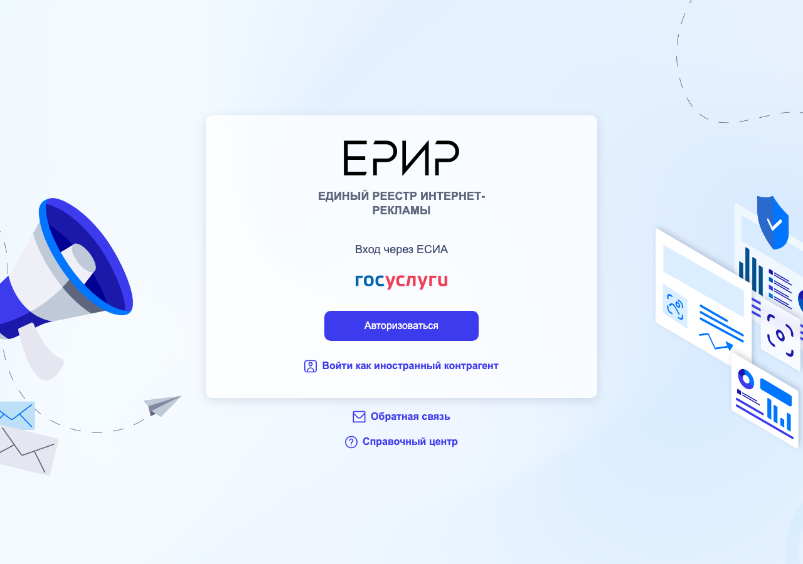

Справочник «Вайбкодинг в России» · модуль 6 · Реклама и продвижение
Глава 6.1
Маркировка
интернет-рекламы
С 1 сентября 2022 года каждая реклама в интернете, адресованная россиянам, получает идентификатор — токен erid, помечается словом «реклама» и указанием рекламодателя, а сведения о ней передаются в Единый реестр интернет-рекламы. С 1 апреля 2025 года с дохода от распространения рекламы уплачиваются отчисления 3 %. В главе разобрано, кто и что делает, когда проект покупает рекламу у блогера или сам размещает рекламу партнёров.
- Закон
- 38-ФЗ ст. 3, 18.1, 18.2 · КоАП РФ ст. 14.3 ч. 15–17
- Уровень
- Базовый
- Связанные главы
- 4.2 Instagram · 6.2 Рассылки · 6.3 Содержание рекламы
- Зачем это знать
- Штраф за рекламу без токена для организации — до 500 тыс. ₽ за каждый случай
§1Что считается рекламой
38-ФЗ «О рекламе»ст. 3, п. 1ред. от 04.08.20261) реклама - информация, распространенная любым способом, в любой форме и с использованием любых средств, адресованная неопределенному кругу лиц и направленная на привлечение внимания к объекту рекламирования, формирование или поддержание интереса к нему и его продвижение на рынке;
Признаки два: неопределённый круг лиц и цель продвижения. Пост блогера о платформе «КурсБлиновской» со ссылкой — реклама. Баннер партнёра в интерфейсе сервиса — реклама. Карточка тарифа на собственном сайте, где пользователь уже находится, по позиции ФАС рекламой обычно не считается: это информация о продавце и услуге. Письмо конкретному клиенту о его счёте — не реклама, письмо с акцией на всю базу — реклама.
§2Три элемента маркировки
38-ФЗ «О рекламе»ст. 18.1, ч. 16–17ред. от 04.08.202616. Реклама, распространяемая в информационно-телекоммуникационной сети "Интернет" […], должна содержать пометку "реклама", а также указание на рекламодателя такой рекламы и (или) сайт, страницу сайта в информационно-телекоммуникационной сети "Интернет", содержащие информацию о рекламодателе такой рекламы.
17. Распространение рекламы и (или) социальной рекламы в информационно-телекоммуникационной сети "Интернет" допускается при условии присвоения оператором рекламных данных соответствующей рекламе […] идентификатора рекламы […], которые представляют собой уникальное цифровое обозначение, предназначенное для обеспечения прослеживаемости […].
Слово «реклама» в посте продажам не мешает. Мешает штраф до 500 тыс. ₽ за каждый пост без него.
erid: 2VtzqvXXXXXЗапустите свой онлайн-курс за вечер: уроки, оплата и рассылка ученикам в одном кабинете. Первые 14 дней — бесплатно.
kursblinovskoy.example/?erid=2VtzqvXXXXX
erid=.ч. 17§3Кто и что делает
Сведения о рекламе собирает Роскомнадзор в Единой информационной системе учёта интернет-рекламы — ЕРИР. Участники рынка передают данные через операторов рекламных данных (ОРД) — организации, отобранные Роскомнадзором.

- Договор с блогером«КурсБлиновской» (рекламодатель) и блогер (рекламораспространитель) заключают договор; в нём указывают, кто передаёт данные в ОРД.
- Регистрация креативаОтветственная сторона регистрирует договор и текст рекламы в ОРД и получает токен erid.
- ПубликацияБлогер публикует пост с пометкой, рекламодателем и токеном.
- Акты и статистикаДо 30-го числа месяца, следующего за месяцем показа, в ОРД передают акты и число показов.
- Отчисления 3 %Рекламораспространитель — в этом примере блогер — платит 3 % с дохода от рекламы за квартал (ст. 18.2).
38-ФЗ «О рекламе»ст. 18.2, ч. 1, 4ред. от 04.08.20261. Рекламораспространители и операторы рекламных систем, осуществляющие распространение в информационно-телекоммуникационной сети "Интернет" рекламы, направленной на привлечение внимания потребителей рекламы, находящихся на территории Российской Федерации, обязаны осуществлять обязательные отчисления от суммы дохода, полученного от реализации услуг по распространению рекламы […].
[…]
4. Обязательные отчисления […] устанавливаются в размере трех процентов от базы расчета обязательных отчислений […].
Отчисления идут в бюджет на поддержку правообладателей российского ПО. Если российский рекламодатель покупает рекламу у иностранной площадки, обязанность по отчислениям переходит на него (ч. 5 ст. 18.2).
§4Штрафы
Штраф назначается за каждый случай. Десять постов без токена — десять составов. Ответственность несут и рекламодатель, и рекламораспространитель, если обязанность по договору лежала на них.
§5Разбор: реклама собственного продукта
Да: неопределённый круг лиц и продвижение продукта, даже если канал принадлежит основателю.
Для рекламы собственного продукта на собственном ресурсе без договора и оплаты правила учёта в ЕРИР применяются по-разному, и позиции Роскомнадзора менялись. Безопасный вариант — зарегистрировать креатив в ОРД как самореклама и получить токен. Если пост оплачен или размещён в чужом канале, маркировка обязательна без вариантов.
Канал с аудиторией больше 10 тысяч должен быть в перечне Роскомнадзора (глава 4.3), иначе размещать на нём рекламу нельзя (ч. 10.6 ст. 5 закона 38-ФЗ). С 10 марта 2026 года ФАС считает рекламу в Telegram рекламой на ресурсе с ограниченным доступом (ч. 10.7 ст. 5); санкции не применяются до 31.12.2026 (глава 17.1).
§6Частые ошибки
§7Проверьте себя
- Назовите два признака рекламы. Является ли рекламой карточка тарифа на своём сайте?
- Какие три элемента должна содержать интернет-реклама?
- Что такое ЕРИР и ОРД и как между ними движутся данные?
- Кто платит отчисления 3 % и с какого дохода?
- Какой штраф грозит организации за рекламу без токена?
«реклама»рекламодатель + ИННerid в тексте и ссылкес 01.09.2022ОРД → ЕРИР (РКН)акты и показы — ежемесячно3 % — ст. 18.2, с 01.04.2025ч. 16 без токена — до 500 тыс.ч. 15 без отчёта — до 500 тыс.за каждый случайСправочник «Вайбкодинг в России» · модуль 6 · глава 6.1Макаров Максим Николаевич